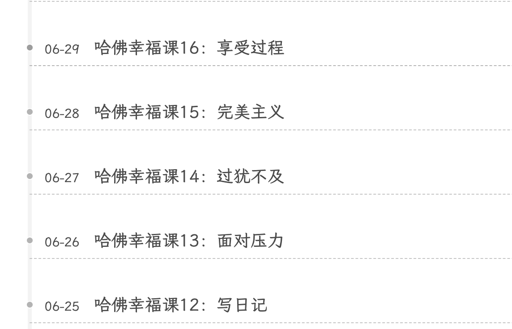

今天终于把哈佛幸福课的23集都看完了，每集一个半小时，一开始一天看一集，真的有点长，时间很紧张，而且每看完一集我都会通过 AI 提取出文章中的关键点，把这些内容读一遍改一改病句还要再花一些时间，每天花在学习幸福课上的时间超过2小时，导致我一整天的时间安排都很紧凑，学习这门课的初衷是让自己更幸福，现在反而更不幸福了，这段时间也通过这种方式水了好几篇文章。

一天我突然意识到，我为什么要这么匆匆忙忙的着急看完，课程中 Tal 说过一句话：「比物质充裕更能带来幸福的是时间充裕」，让自己慢下来，过程中更投入一些，所以剩下的课程是每天看25分钟，一周学一节课。同时我把之前水的那些又臭又长的文章删掉了，在这篇文章中用小量的篇幅记录几个对我影响最大的观点。
下边进入正题：
要多问积极的问题
积极的问题会引导人正向地思考。
如果我们只问消极的问题，比如「为什么这么多人失败」，我们就没法看到潜藏在每个人心中的伟大，如果我们只问「我的人际关系该怎样改善」，我们就无法看见身边的人所拥有的宝贵财富和奇迹。
我们要多问积极的问题：
- 我的人际关系中有什么好的方面？
- 我的同伴有哪些优点？
- 我自己有哪些优点？
- 什么对我最有意义？
- 什么能使我愉快？
- 我擅长什么？
问题会带来探索，探索的内容取决于我们所问的问题。
信念创造现实
我们如何理解现实才是最后所得的结果。
信念常常会成为自我实现的预言，但它是如何作用的? 有两个机制：
- 一是动力
- 二是一致性或相合性的概念：我们的大脑不喜欢内部与外部存在差异，我们的精神喜欢两者一致相合。
- 有时你的欢乐是微笑的源泉，但有时你的微笑也可以成为欢乐的源泉。
将卓越和平庸划分开的有两样东西：
- 一是他们总在问问题，总想学习到更多，心怀谦逊对成长、幸福和自尊尤为重要。
- 其次，他们相信自我，他们有自信，他们有自我效能通往成功和进步。
如何提升信念？
通过拉伸自我（走出舒适区），多去尝试，挑战自我，通过具象化使我们明白自己可以做到。
学会失败，从失败中学习
勇气并不是没有畏惧，而是有了畏惧还坚持向前
研究表明，失败真的是成功之母。最成功的人往往是失败得最多的。学会面对自己的失败，在失败中学习。这是学习的不二法门。
爱迪生比任何科学家获得专利都多的人，同样也是失败过最多次的人。真正来自于失败的痛苦远小于我们想象的。
不要因为害怕失败而放弃去尝试自己真正想做的事，
允许自己为“人” (permission to be human)
允许自己有缺点、犯错误，允许自己做人而不是神。在合理合法的范围内，对自己宽容一点。
当经历感情创伤时，你会看着它说“我只是普通人，我很难过，真希望事情不是这样，但我接受它，就像接受重力定律一样，因为重力定律是一种物理本质，就像感情创伤是一种人性本质，允许为人。”
好东西太多有时也不是好事
过犹不及，多则劣，少则精。
两首好歌同时放，就是噪音。
留下自己真正想要的，扔掉并没有很想要的，就算它很珍贵。比物质充裕更能带来幸福的是时间充裕。
少做点事，可以完成得更多。时间充裕的人，往往更容易获得幸福感。
宁缺毋滥，简化与效率是以曲线形式存在。
果断坚决，在适当的时候学会说”不”，弄清楚你究竟真正想做的东西，然后去做。
你现在和未来所经营的一段亲密关系比世界任何事都重要
甚至比问问题更重要，比考试更重要，比我们有多成功，多被人景仰更重要得多。
最能给人幸福感的东西，是良好的人际关系。亲密关系比很多事情都重要，它会给人带去有治愈能力的爱和温暖。
最成功恋情的四个特点：
- 经营爱情需要付出努力
- 我们需要被了解而不是被认可
- 爱情中冲突不可避免
- 冲突要针对行为而不是针对人。
- 避免针对人身，认可本人，尽量赞赏对方，仅对其行为或是其想法观念不苟同。
- 尽量在私下才争吵。
- 可以有争执，但要将其保持在认知行为上而非情感的，感情的，蔑视的层面。
- 积极认知，做优点感知者，多赞赏对方
性在长久美好恋情中很重要。爱情，准确地说，性的至高点使爱具体化，使爱具体化。
每周锻炼4次，每次30分钟
基因决定的基准幸福水平，当我们不锻炼时，就像打了镇静剂。
运动是一项对现在和未来的投资。
我们必须和本性抗争，和本性抗争是很难的，提升我们幸福的水平是很难的，而同时要和本性抗争则是难以想象的困难。
锻炼的好处：
- 心理层面：增强自信自尊、减轻焦虑和压力、有助于临床精神疾病的辅助治疗、提高认知功能。
- 身体层面：减轻或保持体重、减少慢性病、更强大的免疫系统、更美妙的性生活。
其他提高幸福感的灵丹妙药还有：
- 冥想、深呼吸、瑜伽
- 良好的睡眠
- 触摸、拥抱
- 触摸有助于伤口愈合，有助于身体健康，增强免疫系统，改善性生活。
被了解而非被证明
从希望被认可变成希望被了解。一个人很多时候不是因为完美而被喜欢，是因为真实而被喜欢。因为真实而被喜欢，才是持久、轻松、可持续发展的。
并不是说要完全去除我们依赖别人的自尊，而是明白更重要的是被了解；去表达自己，而非给他人留下印象。这样人生会变得更轻松，更简单。
休息的重要性
那些成功人士，一是他们有习惯，二是他们有恢复，有休息。
我们要转变对生活的理解：
- 从马拉松运动员 变为 短跑运动员；
- 从不停地跑跑跑 变为 短跑，恢复，短跑，恢复。
心怀感激
应心怀感激，不要等到不幸发生时才意识到。
有很多好事值得我们感激，但我们都把它们习以为常，认为理所当然。例如我们把父母、朋友对我们的好视为理所当然。
把感激培养成一种生活习惯，对身体的好处，包括心率变异性，它能预测我们是否能长寿，预测我们是否健康。当我们感激时，副交感神经系统功能增强，使我们变平静，从而加强免疫系统，当感激成为我们的性格。还有很多好处，所以感激不只上一种心情，也是一种性格。
表达感激时我们感觉很好，对方也会感觉很好，他们的获益良多，于是你创造了一个双赢的局面，一个上升的螺旋。
怎样培养感激？
- 通过一次又一次的感激来培养
- 每天睡前写下 5 件让自己满意的事
每天两次花一分钟时间留意周遭的一切。
花一分钟的时间，在上班的路上看看美丽的草地，青翠的树，美丽的雪。
晚上用一分钟去回忆，回想你度过的一天，写下让你心怀感激的事物。